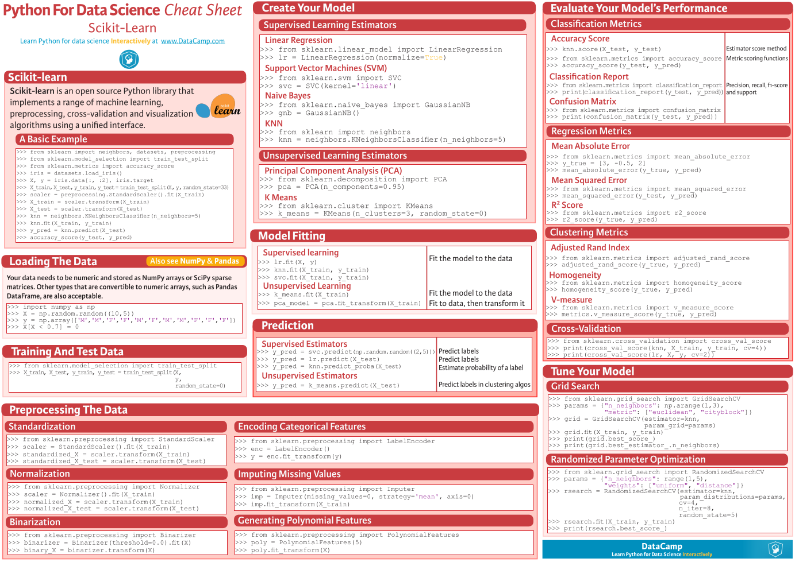

机器学习笔记
Table of Contents
目录 TOC@2 QUOTE
- Python笔记
- 常用函数
- Pandas库笔记
- Series
- DataFrame
- Numpy库笔记
- Copy or View?
- 数组的in place改变
- 常用函数
- 数据集操作的一般过程（以Kaggle Titanic为例）
- 加载数据
- 预览数据
- 清理数据
- 从训练集中分离出测试集
- 分析数据，找到关联性
- 模型化数据集
- 注意点（摘自机器学习实战）
- 机器学习实战
- 第四章 训练模型
Python笔记
常用函数
%timeit func() # 考查操作的运行时间 map(func_obj, iter1, iter2) # 但是请尽量用生成器 map(lambda x:x+1, iter1, iter2) # lambda表达式
Pandas库笔记
Series
import pandas as pd pd.Series
DataFrame
- DataFrame中的方法属性：
'T', 'abs', 'add', 'add_prefix', 'add_suffix', 'agg', 'aggregate', 'align', 'all', 'any', 'append', 'apply', 'applymap', 'asfreq', 'asof', 'assign', 'astype', 'at', 'at_time', 'attrs', 'axes', 'between_time', 'bfill', 'bool', 'boxplot', 'clip', 'columns', 'combine', 'combine_first', 'convert_dtypes', 'copy', 'corr', 'corrwith', 'count', 'cov', 'cummax', 'cummin', 'cumprod', 'cumsum', 'describe', 'diff', 'div', 'divide', 'dot', 'drop', 'drop_duplicates', 'droplevel', 'dropna', 'dtypes', 'duplicated', 'empty', 'eq', 'equals', 'eval', 'ewm', 'expanding', 'explode', 'ffill', 'fillna', 'filter', 'first', 'first_valid_index', 'floordiv', 'from_dict', 'from_records', 'ge', 'get', 'groupby', 'gt', 'head', 'hist', 'iat', 'idxmax', 'idxmin', 'iloc', 'index', 'infer_objects', 'info', 'insert', 'interpolate', 'isin', 'isna', 'isnull', 'items', 'iteritems', 'iterrows', 'itertuples', 'join', 'keys', 'kurt', 'kurtosis', 'last', 'last_valid_index', 'le', 'loc','lookup', 'lt', 'mad', 'mask', 'max', 'mean', 'median', 'melt', 'memory_usage', 'merge', 'min', 'mod', 'mode', 'mul', 'multiply', 'ndim', 'ne', 'nlargest', 'notna', 'notnull', 'nsmallest', 'nunique', 'pct_change', 'pipe', 'pivot', 'pivot_table', 'plot', 'pop', 'pow', 'prod', 'product', 'quantile', 'query', 'radd', 'rank', 'rdiv', 'reindex', 'reindex_like', 'rename', 'rename_axis', 'reorder_levels', 'replace', 'resample','reset_index', 'rfloordiv', 'rmod', 'rmul', 'rolling', 'round', 'rpow', 'rsub', 'rtruediv', 'sample', 'select_dtypes', 'sem', 'set_axis', 'set_index', 'shape', 'shift', 'size', 'skew', 'slice_shift', 'sort_index', 'sort_values', 'sparse', 'squeeze', 'stack', 'std', 'style', 'sub', 'subtract', 'sum', 'swapaxes', 'swaplevel', 'tail', 'take', 'to_clipboard', 'to_csv', 'to_dict', 'to_excel', 'to_feather', 'to_gbq', 'to_hdf', 'to_html', 'to_json', 'to_latex', 'to_markdown', 'to_numpy', 'to_parquet', 'to_period', 'to_pickle', 'to_records', 'to_sql', 'to_stata', 'to_string', 'to_timestamp', 'to_xarray', 'transform', 'transpose', 'truediv', 'truncate', 'tshift', 'tz_convert', 'tz_localize', 'unstack', 'update', 'values', 'var', 'where', 'xs'
Numpy库笔记
Copy or View?
- vew
- Slice view
- Dtype view
- shallow copy
- deep copy
数组的in place改变
以下是不同的操作过程：
# y = np.arange(8) y += 1 # 更快 y = y + 1 # 更慢
常用函数
import numpy as np a = np.arange(3) b = np.arange(3,6) c = np.r_[a, b, 1, [3]] # 合并数组 d = np.c_[a, b] # 合并数组 e = np.ones((4, 1)) # 接收元组 d.shape d.resize(2, 3) # 无返回值，将原数组形变，接收元组 f = d.reshape(（2,3）) # 返回变形后的数组，原数组不变，接收元组
数据集操作的一般过程（以Kaggle Titanic为例）
疑问：
- 分离出测试集应该在预览数据之前还是之后？
- 清理数据时，是对整个数据集操作还是只对训练集操作？
- 交叉验证总是需要的吗？只是在出现过拟合时使用？
Jupyter Notebook: titanic-adatascienceframeworktoachieve99accuracy.ipynb
加载数据
Kaggle网站上Titanic竞赛中的数据集test.csv指求解时的实例，去掉了标签'Survived'.
import pandas as pd
df = pd.read_csv("train.csv") # , delimiter=',')
df2 = pd.read_csv("test.csv") # , delimiter=',')
- 要注意Python中赋值时，引用与复制数据的区别！
data1 = df.copy(deep=False) #不复制df的indices和数据，只创建一个指向原数据的引用 data1 = df.copy(deep=True) #复制df的indices和数据，并在内存中创建新的对象
- 引用也是很有用的，尤其是在清理数据时（为什么要清理data-val？）
data_clearner = [data1, df2] #可以一起清理
预览数据
df.info() df.head() df.tail() df.sample(10)
清理数据
4个'C':
- Correcting: 更正异常值，离群值
- Completing: 补全缺失信息
- Creating: 创建新的特征，用以之后的分析
- Converting: 转换数据的格式，以备后续的计算与呈现
3.3.1 Completing
不推荐删除记录，尤其当它占的比例大时。最好impute. 对于定性值， 一般使用mode，对于定量值一般用中值、平均值或以平均值+随机化的标准差来代替。 还有针对具体问题更特殊的处理方法，如代之以某个小类别中的中值等。
df.isna().sum() # 查看数据中的空值情况 df.isnull().sum() # 查看数据中的空值情况 df.describe(include='all') #数据的简单分析 df['Age'].fillna(df['Age'].median(), inplace=True) # 用中值来补全空值（定量值） df['Embarked'].fillna(df['Embarked'].mode()[0], inplace=True) # 用出现最的类别来补全空值（定性值） drop_index = ['PassengerId', 'Ticket'] # index to drop df.drop(drop_index, axis=1, inplace=True) # drop features/columns
3.3.2 Creating
特征工程：用已经存在的特征来创造新的特征，以检查是否对结果预测提供新的信息。
df['FamilySize'] = df.['SibSp'] + df.['Parch'] + 1 # 新建特征
df['Alone'] = 0
df['Alone'].loc[df['FamilySize'] > 1] = 1 # 选择性赋值
df['Title'] = df['Name'].str.split( # 特征中字符串截取
', ', expand=True)[1].str.split('.', expand=True)[0]
df['FareBins'] = pd.cut(df['Fare'], 4) # 离散化连续值到区间
df['AgeBins'] = pd.qcut(df['Age'].astype(int), 5) # 离散化连续值到区间
# 清理类别数太少的类别
title_name = df['Title'].value_counts() < 10
df['Title'] = df['Title'].apply(lambda x: 'Misc' if title_name[x] else x)
3.3.3 Converting
如对object类型的数据格式化，使算法可以处理。
from sklearn.preprocessing import LabelEncoder OneHotEncoder # 数字型编码 encoder = LabelEncoder() df['Sex'] = encoder.fit_transform(df['Sex']) # 独热向量编码， 接收二维数组 encoder2 = OneHotEncoder() df['Sex'] = encoder2.fit_transform(df['Sex'].reshape(-1,1))
从训练集中分离出测试集
两种方法：
- 固定比例分离
train1_x, test1_x, train1_y, test1_y = model_selection.train_test_split(data1[data1_x_calc], data1[Target], random_state = 0)
- 交叉验证（用以比较模型）
model_selection.cross_val_score()
分析数据，找到关联性
df[['Sex', 'Survived']].groupby('Sex',as_index=False).mean() # 特定特征与标签的关系
# 图示某一个特征与标签的关系
plt.hist(x = [df[df['Survived']==1]['Fare'], df[df['Survived']==0]['Fare']],
stacked=True, color = ['g','r'],label = ['Survived','Dead'])
plt.title('Fare Histogram by Survival')
plt.xlabel('Fare ($)')
plt.ylabel('# of Passengers')
plt.legend()
# 图示某两个特征与标签的关系
sns.violinplot(x = 'Pclass', y = 'Age', hue = 'Survived', data = data1, split = True, ax = axis2)
axis2.set_title('Pclass vs Age Survival Comparison')
# Pearson关联
df.corr()
Pearson关联的绘图函数：
#correlation heatmap of dataset
def correlation_heatmap(df):
_ , ax = plt.subplots(figsize =(14, 12))
colormap = sns.diverging_palette(220, 10, as_cmap = True)
_ = sns.heatmap(
df.corr(),
cmap = colormap,
square=True,
cbar_kws={'shrink':.9 },
ax=ax,
annot=True,
linewidths=0.1,vmax=1.0, linecolor='white',
annot_kws={'fontsize':12 }
)
plt.title('Pearson Correlation of Features', y=1.05, size=15)
correlation_heatmap(data1)
模型化数据集
背景知识
机器学习算法可以分为四个部分：
- 分类
- 回归
- 聚类
- 降维
机器学习知识：


解决有监督的分类问题的算法：
- Ensemble Methods
- Generalized Linear Models (GLM)
- Naive Bayes
- Nearest Neighbors
- Support Vector Machines (SVM)
- Decision Trees
- Discriminant Analysis
注意点（摘自机器学习实战）
- 对收入分层抽样，不能分太多层
- 分层方法：除以1.5，向上取整；然后合并大于5的分类
- 地理数据可视化，用其他相关属性作为颜色，和散点大小
- 寻找与标签相关性高的属性，用df.corr()['labels']
- 进一步考察高相关性属性的数据模式，并删除可能的错误数据
- 尝试不同的属性组合，以找到高相关性特征
- 将预测器与标签分离，因为可能不一定对它们使用相同的转换方式
- 特征缩放（归一化、标准化），即同比缩放所有属性
- 评估训练得的模型，对训练集求RMSE或MAE
- 误差较大则拟合不足，可以
- 误差过小？则用验证集来验证得到的模型，以检查是否过拟合
- 交叉验证，可以sklearn的K-fold功能
- 如果在验证集上得到的误差大则说明确实有过拟合，需要更换模型
- 尝试多个模型以找到2-5个有效的模型，别花太多时间去调整超参数
- 保存每个尝试过的模型，用pickel或sklearn的joblib
- 训练集分数明显低于验证集分数，则过度拟合
- 注意：目标值一般不进行绽放，并且只对训练集缩放
机器学习实战
第四章 训练模型
4.1 线性回归 Linear Regression
用以描述线性化数据集，模型或假设（hypothesis）是特征（x）的线性函数,或者写成向量形式，令\(x_0 = 1\):

上面的表达式也称之为回归方程（regression equation），\theta为回归系数。 成本函数，MSE函数：

- 4.1.1 闭式解-标准方程（normal equation）
即直接通过解析表达式计算得到参数向量θ:

可以使用Numpy的线性代数模块np.linalg中的inv()函数来求矩阵逆，用dot()方法计算内积。 特征数量大时标准方程计算极其缓慢，此时可以用迭代优化法。
注意 ：
书中有误，Scikit-Learn的LinearRegression类并不是标准方程的实现，而是基于X的SVD分解。其时间复杂度为O(n^2)，在m<n或特征线性相关时依然可以工作（标准方程不行，因为不满秩）。 LinearRegression类不需要对特征进行标度。
from sklearn.linear_model import LinearRegression lin_reg = LinearRegression() # 基于scipy.linalg.lstsq() lin_reg.fit(X, y) lin_reg.intercept_, lin_reg.coef_ # 偏置\theta_0与权重\theta_i lin_reg.predict(X_new) # 预测 # 可能直接调用lstsq()，意为最小平方 theta_best_svd, residuals, rank, s = np.linalg.lstsq(X_b, y, rcond=1e-6) theta_best_svd
- 4.1.2 梯度下降(迭代优化)
从随机值开始，每一步降低成本函数，直到成本函数最小值。每一步的步长取决于超参数: 学习率 η ( learning rate ).
注意 ：
- 线性回归模型的MSE是凸函数，没有局部最小，只一个全局最小。
- 应用梯度下降时要保证所有特征数值大小比例差不多，即要先进行特征缩放！
- 特征缩放主要有两种方式：standerization和normalization，见第二章，68页。
- 可以使用sklearn的StandardScaler类。
- 学习率的选取很关键，可以限制迭代次数进行网格搜索。
- 4.1.2.1 批量梯度下降
在计算梯度下降的每一步时，都基于整个训练集。训练集庞大时很耗时，但随特征数增大时，算法表现良好。
- 4.1.2.2 随机梯度下降
在计算梯度下降的每一步时，只随机地使用一个训练集实例。训练集庞大时很耗时，但随特征数增大时，算法表现良好。
- 当成本函数有局部最小时，可以跳出局部最小，找到全局最小
- 设定 学习计划 ，开始时大步长，最后小步长（模拟退火）
- 乱序训练集使一个接一个地使用实例，反而会导致收敛更慢！
from sklearn.linear_model import SGDRegressor sgd_reg = SGDRegressor(max_iter=50, tol=-np.infty, penalty=None, eta0=0.1, random_state=42) sgd_reg.fit(X, y.ravel()) sgd_reg.intercept_, sgd_reg.coef_
- 4.1.2.3 小批量梯度下降
在计算梯度下降的每一步时，只随机地使用一个小的实例集。主要优势在于可以用GPU加速计算。
- 4.1.3 标准方程与梯度下降对比